5 虛擬刀房- 詳細操作說明
- 虛擬刀房軟體詳細說明包含初次操作、計畫設定、連線檢查、儲存設定、即時監控、自動測試、歷程檢視、與模擬分析等，分述如下。
初次操作
安裝Python並確認環境變數:
安裝完Python後，檢查Python環境變數(如圖 59)路徑下是否有python.exe(如圖 60)，確保系統正常運行
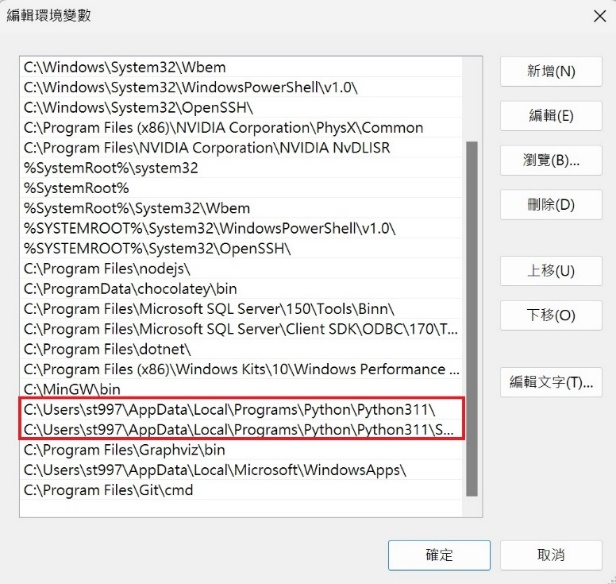
圖 59、Python環境變數
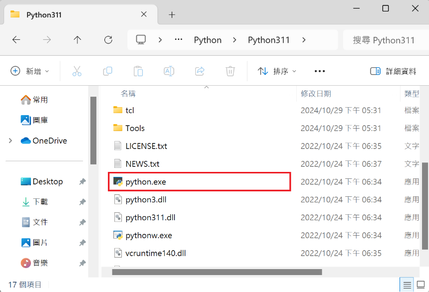
圖 60、環境變數路徑下的python.exe
MQTT前置設定:
安裝mosquitto作為MQTT的broker，安裝網址mosquitto.org(如圖 61)。
使用 MQTT 前，需要先在 Windows Defender 防火牆中新增輸入規則，允許 Port 1883 通訊，以便電腦啟用 MQTT 服務（如圖 15）。
(1) 到mosquitto網站上選取所需的版本下載
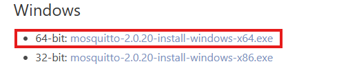
圖 61、MQTT前置設定1
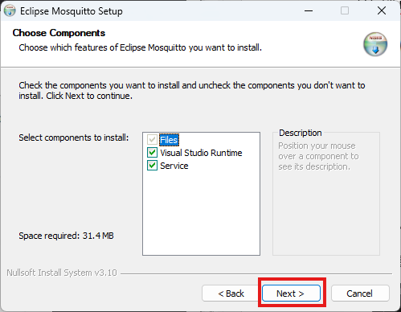
圖 62、MQTT前置設定2
(2) 搜尋「控制台」開啟控制台介面，開啟「系統及安全性」(如圖 63)
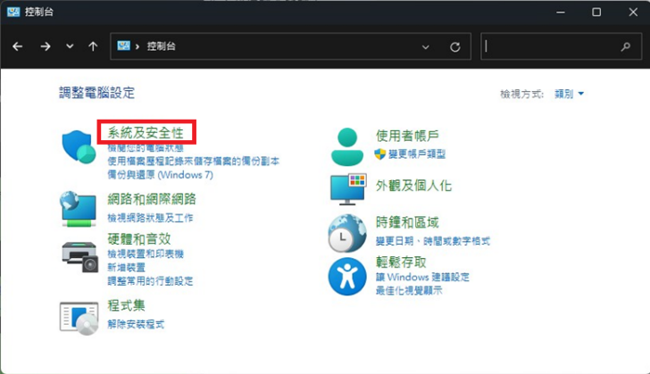
圖 63、MQTT前置設定3
(3) 開啟「Windows Defender防火牆」(如圖 64)
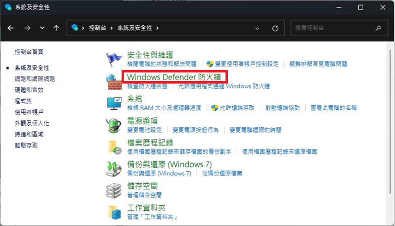
圖 64、MQTT前置設定4
(4) 選擇「進階設定」(如圖 65)
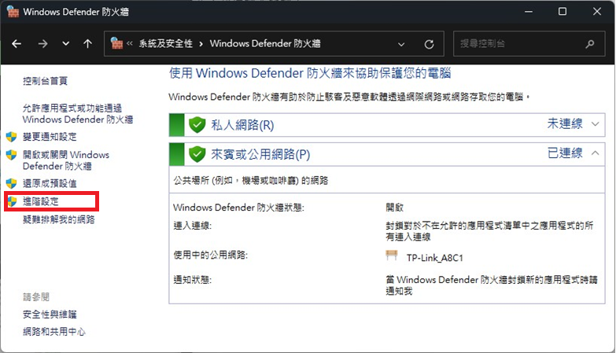
圖 65、MQTT前置設定5
(5) 選擇「輸入規則」後按下「新增規則」(如圖 66)
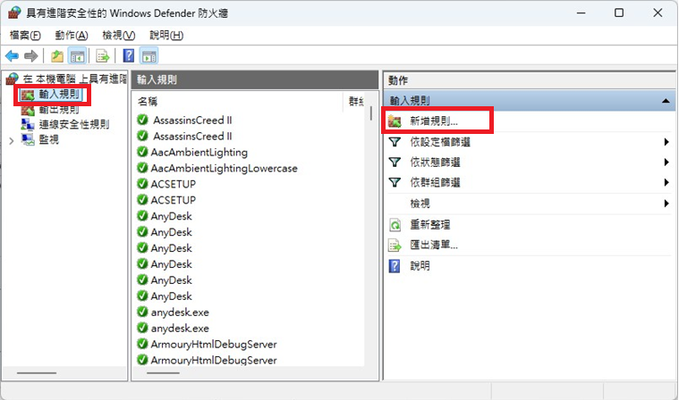
圖 66、MQTT前置設定6
(6)選擇連接埠(如圖 67)
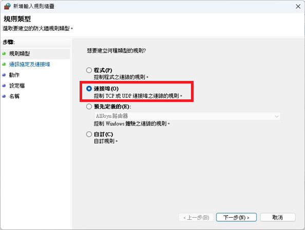
圖 67、MQTT前置設定7
(7) MQTT 的預設通訊埠為 1883，選擇TCP連線協定以及在特定本機連接埠輸入1883(如圖 68)
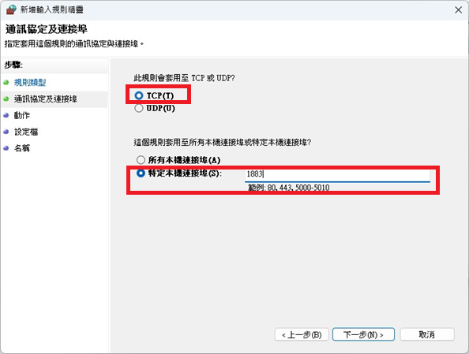
圖 68、MQTT前置設定8
(8) 選擇允許連線(如圖 69)
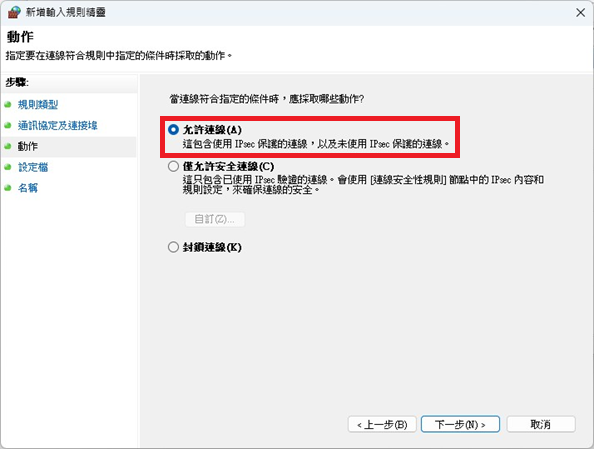
圖 69、MQTT前置設定9
(9) 選擇網域、私人、公用(如圖 70)
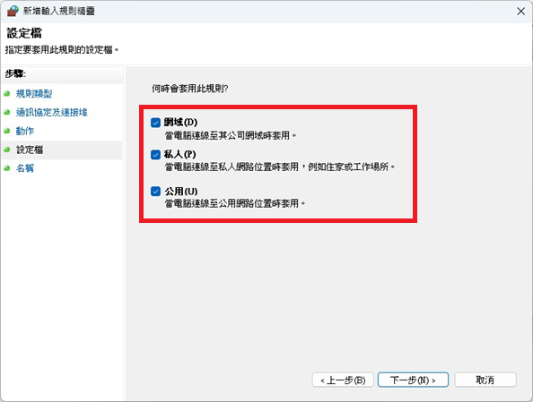
圖 70、MQTT前置設定10
(10) 填好名稱後，完成輸出Port 1883的規則(如圖 71)
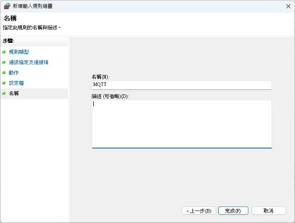
圖 71、MQTT前置設定11
(11) 確認輸入規則正常啟用(如圖 72)。
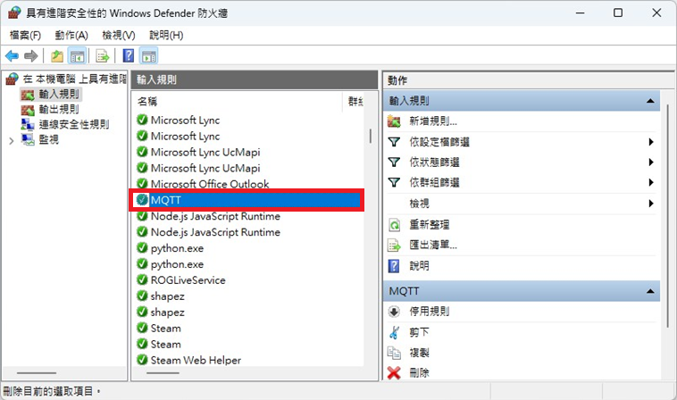
圖 72、MQTT前置設定12
設定IP與Router位置:
在開始實驗之前，首先要連接WIFI，選擇ST_route，編輯網路IP設定(如圖 73)
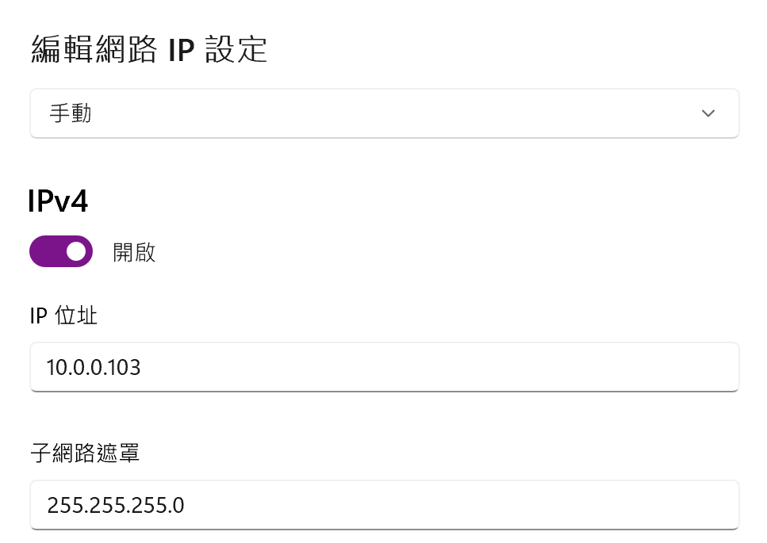
圖 73、網路IP設定
計畫設定
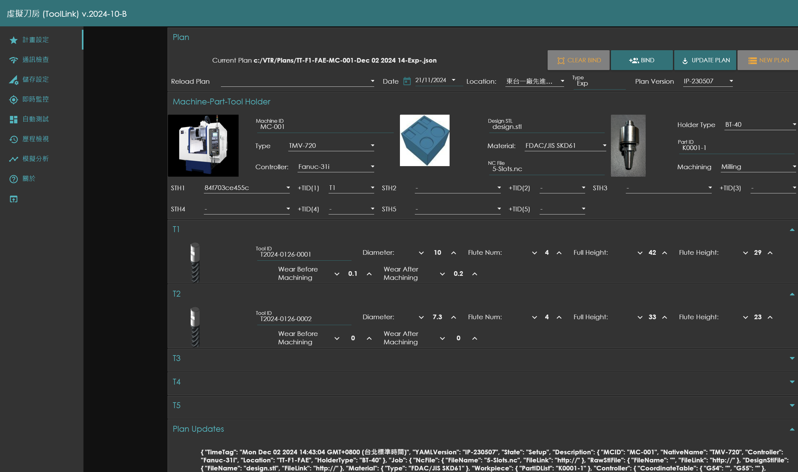
圖 74、計畫設定頁面
計畫設定頁面操作流程
- 創建與更新計畫(如圖 75)
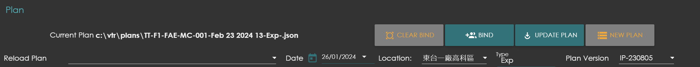
圖 75、生產計畫設定頁面之創建與更新計畫畫面
新建計畫(NEW PLAN)：
如果需要開始新的生產或實驗計畫，請按下「NEW PLAN」。這會創建新的計畫檔案，可以在其中設定所有必要的機台、刀具和工件參數。
新的計畫會以JSON與YML格式保存，並包含計畫的所有基礎設定，例如日期、機台位置和計畫類型等。
更新計畫(UPDATE PLAN)：
當需要對現有的計畫進行修改時，使用「UPDATE PLAN」按鈕。例如更改機台的配置或刀具的參數，可以通過這個按鈕進行更新。
更新後的計畫會覆蓋現有版本，並且所有變更會顯示在「Plan Updates」區域中，方便追蹤變更內容。
重新載入計畫(Reload Plan)：
如果需要動用過去的資料，可以使用「Reload Plan」重新載入計畫，這樣就能看到該檔案的設定。
- 設定機台與刀具和加工模式(如圖 76)
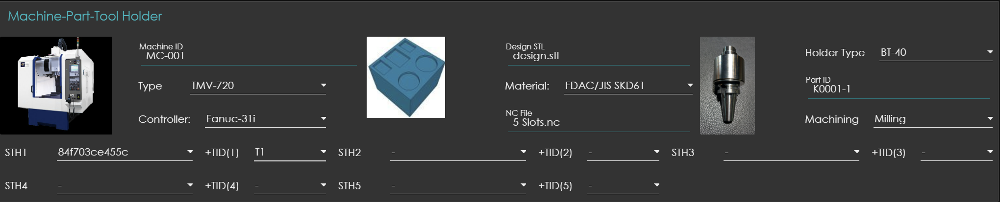
圖 76、生產計畫設定頁面之設定機台與刀具畫面
機台與工件和加工模式設定：
在「Machine-Part-Tool Holder」區域中，可以設置機台基本信息，例如機台編號(Machine ID)、型號(Type)、控制器(Controller)、加工模式(Machining)以便於記錄不同的機台和加工模式。
設計檔案(Design STL)、材料(Material)：上傳工件的STL檔案，並選擇工件材料，這樣可以為生產過程提供參考。
設定計畫需要綁定的智慧刀把與刀具：
在STH選擇MAC號和在TID選擇刀具編號，得以進行綁定。
智慧刀把與刀具綁定：
綁定(BIND)：使用此按鈕來綁定智慧刀把(如STH1、STH2)的MAC與刀具編號(如TID1、TID2等)，確保正確紀錄和使用對應的刀具。
清除綁定(CLEAR BIND)：解除刀具和刀把之間的綁定，按下「CLEAR BIND」即可清除當前綁定的信息。
- 設定刀具參數(如圖 77)
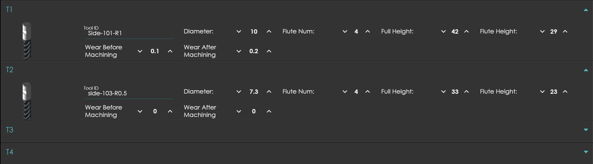
圖 77、生產計畫設定頁面之設定刀具參數畫面
刀具設定(T1-T5 區域)：
在每個刀具區域(T1~T5)中可以設定刀具的參數，包括刀具編號(Tool ID)、直徑(Diameter)、刃數(Flute Num)、全長(Full Height)和刃長(Flute Height)。
同時記錄每個刀具的磨損狀況，包括加工前磨損(Wear Before Machining)和加工後磨損(Wear After Machining)，用於分析刀具的使用壽命和優化生產。
這些設定會保存到計畫檔案中，並顯示在「Plan Updates」區域供日後參考。
- 查看計畫更新記錄(如圖 78)
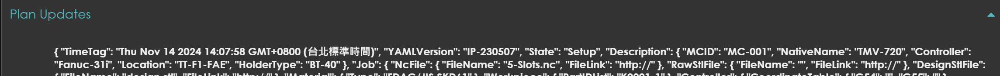
圖 78、生產計畫設定頁面之計畫更新記錄畫面
計畫更新(Plan Updates)：
這個區域用於顯示在生產計畫中所做的所有更新。每當按下「UPDATE PLAN」或進行其他計畫更改時，這些變更內容都會以JSON格式記錄在此處。
連線檢查
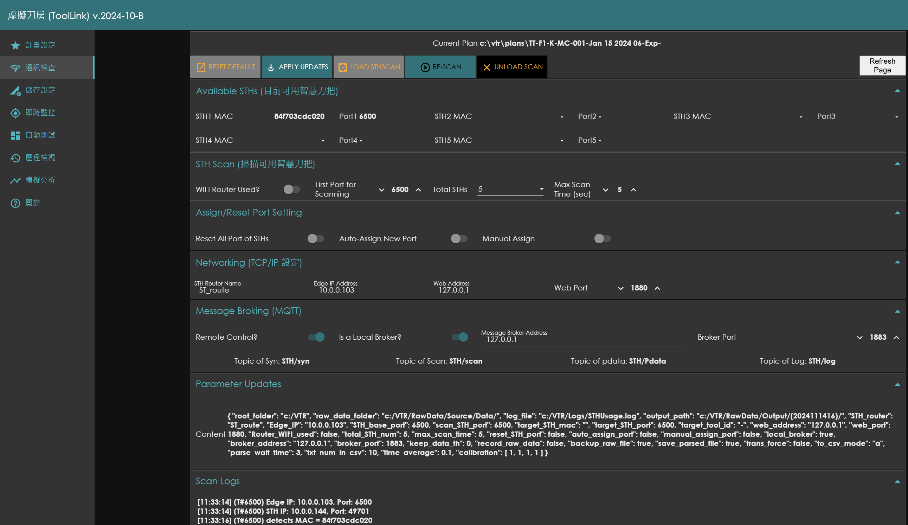
圖 79、連線檢查頁面
連線檢查頁面操作流程
- 設定與掃描操作(如圖 80)
圖 80、連線檢查頁面之設定與掃描操作畫面
RESET DEFAULT(重置為預設):
按下這個按鈕會將參數重置為系統的預設值，從InitSTH.py讀取初始設置，方便快速恢復到系統默認狀態。
APPLY UPDATES(應用更新):
當更改連線設置後，按下此按鈕可以將新的參數值保存至InitSTH_u.json文件，確保更新的配置被記錄下來，並且所有變更會顯示在「Parameter Updates」區域中，方便追蹤和確認變更內容。
LOAD STHSCAN(載入STH掃描程序):
這個按鈕用於載入智慧刀把掃描程序(STHScan.exe)，準備開始進行智慧刀把的掃描。
RE-SCAN(重新掃描):
按下這個按鈕可以啟動STH的掃描程序，以檢查並確認當前有哪些智慧刀把可用。
UNLOAD SCAN(卸載掃描):
當不再需要掃描智慧刀把時，可以按下此按鈕結束並退出STH掃描程序。
- 可用智慧刀把與掃描設置(如圖 81)
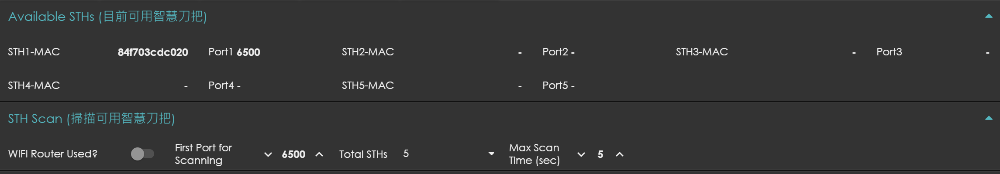
圖 81、連線檢查頁面之可用智慧刀把與掃描設置畫面
Available STHs(目前可用智慧刀把):
在這個區域中會顯示通過掃描得到的智慧刀把MAC地址和對應的Port號，最多可顯示五組。
STH Scan(掃描智慧刀把):
WIFI Router Used?(是否使用 WIFI Router)選擇是否通過Wi-Fi路由器進行掃描。
First Port for Scanning(掃描起始 Port)設定用於掃描智慧刀把的起始連線端口。
Total STHs(最大智慧刀把數量)設定最大可掃描的智慧刀把數量。
Max Scan Time(最大掃描時間(秒))設定每次掃描操作的最大時間，這些設置會保存在InitSTH_u.json中。
- 連線端口設定(如圖 82)
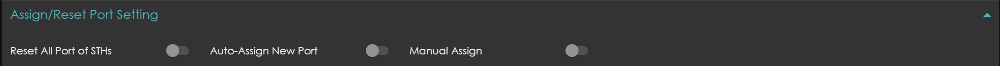
圖 82、連線檢查頁面之連線端口設定畫面
Assign/Reset Port Setting(分配/重置端口設置):
Reset All Ports of STHs(重置所有智慧刀把端口)選擇是否重置所有已掃描到的STH連線端口。
Auto-Assign New Port(自動分配新端口)選擇是否自動分配新的連線端口給智慧刀把。
Manual Assign(手動分配)選擇是否手動分配不同的連線端口。
- 網路與MQTT設定(如圖 83)
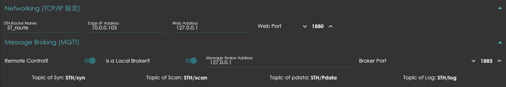
圖 83、連線檢查頁面之網路與MQTT設定畫面
Networking(TCP/IP 設定):
STH Router Name(路由器名稱)設定連接智慧刀把的路由器名稱。
Edge IP Address(機邊 IP 地址)設定機邊電腦的IP位址，便於與智慧刀把進行連接。
Web Address(Web 位址)和Web Port(Web 通訊埠)設定用於UI與系統之間的網頁通訊。
Message Broking(MQTT 設定):
Remote Control?(遠端控制)設定是否允許遠端控制智慧刀把。
Is a Local Broker?(本機 Broker)選擇是否使用本地的MQTT Broker。
Message Broker Address(Broker 位址)和Broker Port(通訊埠)設定MQTT消息Broker的地址和通訊端口。
Topic of Syn/Scan/pdata/log分別設定MQTT的Syn、Scan、pdata和Log主題名稱，確保每個功能模塊的消息順利傳輸。
- 更新與掃描記錄(如圖 84)
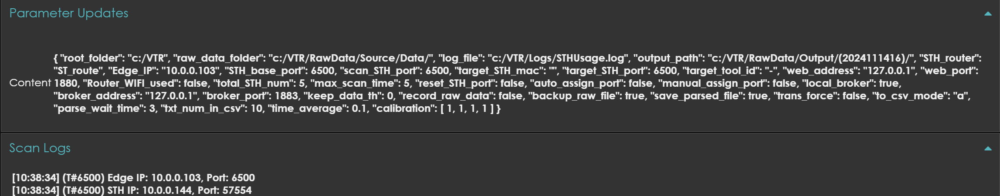
圖 84、連線檢查頁面之更新與掃描記錄畫面
Parameter Updates(參數更新):
按下「APPLY UPDATES」後，這個區域會顯示所有連線檢查和儲存設定的內容，以JSON格式呈現，這樣可以幫助確認所有變更是否正確應用。
Scan Logs(掃描日誌):
當按下「LOAD STHSCAN」後，這個區域會顯示STHScan.exe的運行日誌。
儲存設定
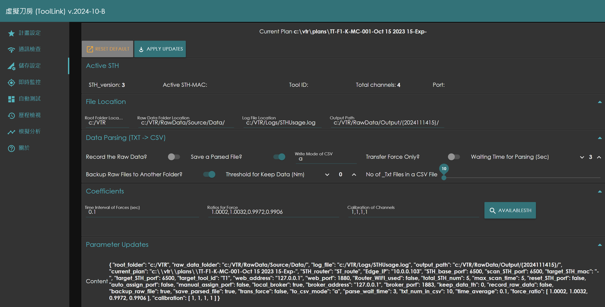
圖 85、儲存設定頁面
儲存設定頁面操作流程
- 計畫管理與重置(如圖 86)
圖 86、儲存設定頁面之計畫管理與重置畫面
RESET DEFAULT(重置為預設):
按下此按鈕會將參數重置為預設值，從InitSTH.py載入初始設置，這樣可以快速恢復到系統的預設狀態。
APPLY UPDATES(應用更新):
當確認了啟用STH的狀態後，按下此按鈕可以將這些更新保存到JSON中，供後續使用。
- 啟用的智慧刀把(Active STH) (如圖 87)
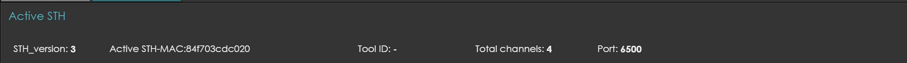
圖 87、儲存設定頁面之啟用的智慧刀把畫面
Active STH:
STH_version(版本)顯示當前啟用的智慧刀把版本。
Active STH-MAC顯示目前啟用的智慧刀把的MAC號。
Tool ID顯示目前與啟用STH綁定的刀具ID。
Total channels(總頻道數)顯示當前智慧刀把的總輸出頻道數。
Port顯示智慧刀把的連線端口號。
- 文件位置設定(如圖 88)
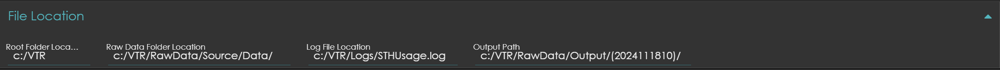
圖 88、儲存設定頁面之文件位置設定畫面
File Location(文件位置):
Root Folder Location設置虛擬刀房資料的根目錄位置。
Raw Data Folder Location設置智慧刀把原始數據的目錄位置。
Log File Location設置虛擬刀房異常事件的日誌文件目錄位置，而產生的日誌文件將會以CSV和TXT記錄STH以及Node Red系統運行過程中的異常事件和錯誤，以便於後續排查和問題診斷。
Output Path設定STH預設輸出的文件路徑，用於存放已解析的數據。
- 資料解析設定(TXT->CSV)(如圖 89)
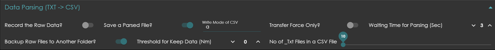
圖 89、儲存設定頁面之資料解析設定畫面
Data Parsing(TXT -> CSV):
Record the Raw Data?(紀錄原始資料)選擇是否紀錄智慧刀把的原始數據。
Save a Parsed File?(儲存已解析的文件)選擇是否將智慧刀把所偵測的力資訊TXT格式轉換為CSV格式。
Write Mode of CSV(CSV 寫入模式)設定是否附加新的力資訊到現存的CSV文件中。
Transfer Force Only?(只轉換力資訊)選擇是否僅將智慧刀把的原始數據轉譯為力資訊。
Waiting Time for Parsing(Sec)(解析等待時間)設定每批次解譯智慧刀把原始數據的等待時間(以秒為單位)。
Backup Raw Files to Another Folder?(備份原始數據)選擇是否將原始數據備份到其他資料夾。
Threshold for Keep Data(Nm)設定受力的最小紀錄門檻，超過此值的數據才會被記錄。
No. of TXT Files in a CSV File設定每個CSV文件中包含的TXT文件數量，數量可通過拉桿調整。
- 校正系數設定(如圖 90)
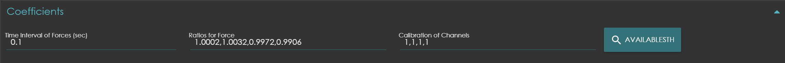
圖 90、儲存設定頁面之校正系數設定畫面
Coefficients(校正系數):
Time Interval of Forces(sec)設定力數據的時間間隔(秒)。
Ratios for Force(力比例)設定不同受力通道的校正比例。
Calibration of Channels(通道校正)設定各頻道的校正值。
AVAILABLESTH按下此按鈕可以將目前啟用的STH-MAC各頻道的受力校正倍率和訊號校正倍率寫入設定中。如果沒有找到對應的MAC，則使用預設值。
- 參數更新與日誌(如圖 91)
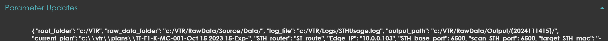
圖 91、儲存設定頁面之參數更新與日誌畫面
Parameter Updates(參數更新):
當按下「APPLY UPDATES」後，這個區域會顯示所有連線檢查和儲存設定的內容，以JSON格式呈現，幫助確認變更是否正確應用。
即時監控
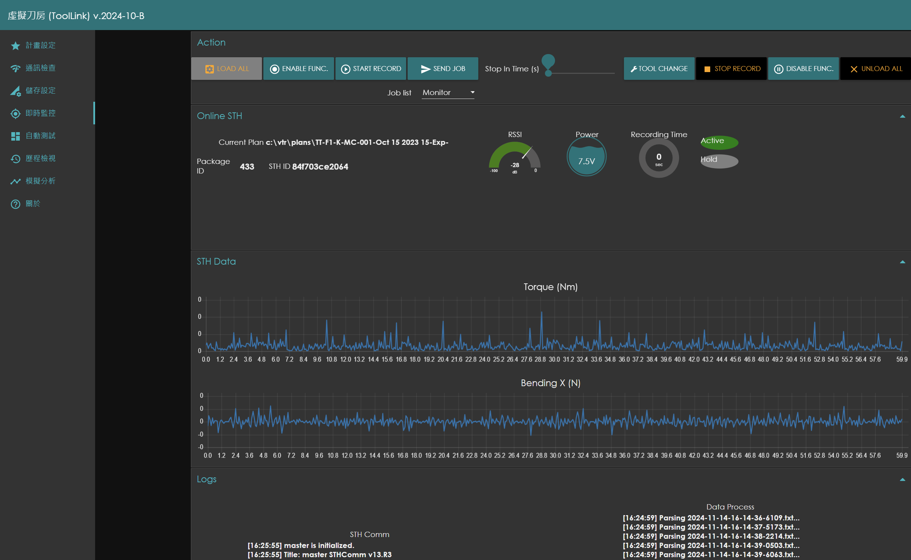
圖 92、即時監視頁面
即時監控頁面操作流程
- 操作區(Action)(如圖 93)
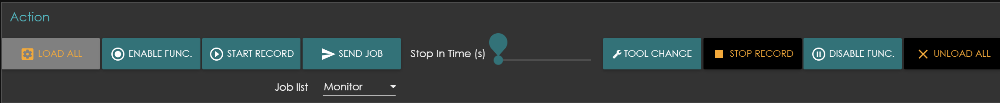
圖 93、即時監視頁面之操作區畫面
LOAD ALL(載入所有):
按下此按鈕會載入STH連線和資料處理程序(STHComm、DataProcess)，以便開始即時監控。
資料處理程序將會把感測原始資料的TXT檔案解析為CSV檔，以提供資料分析。
ENABLE FUNC.(啟動功能):
啟動STH連線和資料處理程序，系統進入可監控狀態，接收來自STH的資料。
START RECORD(開始記錄):
按下此按鈕開始記錄並處理來自STH的感測數據儲存為TXT檔，資料後續通過DataProcess進行處理並保存。
SEND JOB(傳送任務):
將選擇的工作(Job list)以MQTT形式發送至runSTHJobs.py，用於執行特定的STH操作。
Job list從下拉選單中選擇要傳送的任務。
Stop In Time(s)(定時停止):
設定在指定的時間(以秒為單位)內自動停止記錄。
TOOL CHANGE(換刀):
當需要進行CNC換刀時，按下此按鈕觸發換刀動作。
STOP RECORD(停止記錄):
停止記錄並暫停感測數據的處理。
DISABLE FUNC.(禁用功能):
暫停資料處理程序，停止STH連線和數據收集。
UNLOAD ALL(卸載所有):
結束所有STH連線與資料處理程序，將系統返回至未監控狀態。
- 線上智慧刀把(Online STH)(如圖 94)
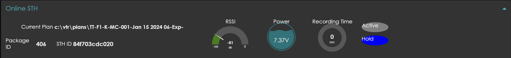
圖 94、即時監視頁面之線上智慧刀把畫面
Current Plan(當前計畫):
顯示目前正在執行的計畫檔案的絕對路徑。
Package ID:
每0.4秒接收到一個封包，封包ID會隨之累加，顯示當前連接的數據流量。
STH ID:
顯示目前連接的STH的MAC地址。
RSSI(訊號強度):
顯示當前連接的無線訊號強度。
Power(電量):
顯示目前啟用STH的剩餘電量。
Recording Time(錄製時間):
按下「START RECORD」後，這個區域會開始顯示已錄製的時間。
Active:
當此燈亮起時，表示目前的訊號穩定。
Hold:
當此燈亮起時，表示目前訊號不穩或與STH的連線中斷，導致收到的數據不完整。
- STH資料顯示(STH Data)(如圖 95)
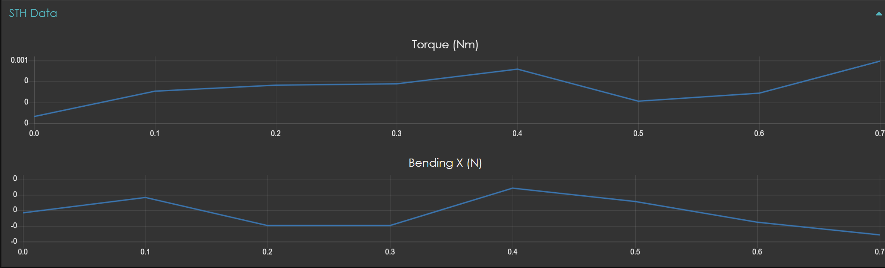
圖 95、即時監視頁面之STH資料顯示畫面
Torque(Nm):
以折線圖形式顯示目前STH讀取的扭矩數據。
Bending X(N):
以折線圖形式顯示目前STH讀取的彎曲力數據。
- 日誌顯示(Logs)(如圖 96)
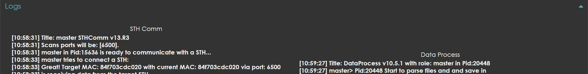
圖 96、即時監視頁面之日誌顯示畫面
STH Comm 日誌:
當按下「LOAD ALL」後，這個區域會顯示STHComm.exe的運行日誌，幫助了解連線過程中的詳細情況。
Data Process 日誌:
當按下「LOAD ALL」後，這個區域會顯示DataProcess.exe的運行日誌，幫助追蹤數據處理的過程和狀態。
自動測試
在「自動測試」模式中，查看「Power(電量)」、「RSSI(訊號強度)」、「Active(狀態)」指示燈是否都是正常，確認智慧刀把是正常工作。
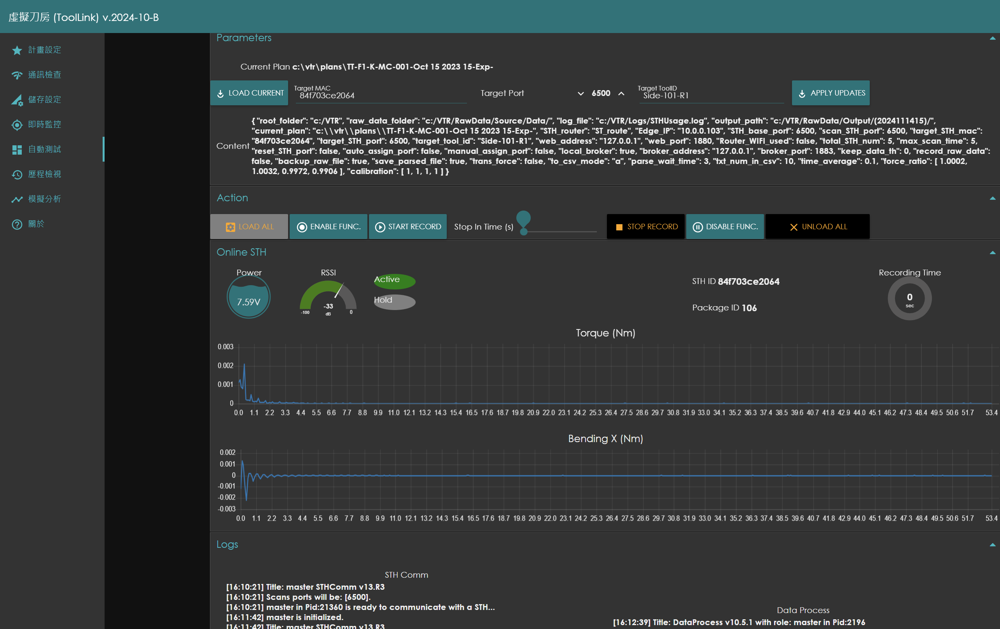
圖 97、自動測試頁面
自動測試頁面操作流程
- 參數區(Parameters)
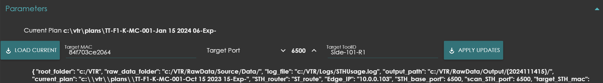
圖 98、自動測試頁面之參數區畫面
Current Plan(當前計畫):
顯示目前計畫檔案的絕對路徑。
LOAD CURRENT(載入當前):
按下此按鈕後，將當前設定的MAC、Port和Tool ID儲存，用於後續操作。
Target MAC(目標 MAC):
設定使用的智慧刀把的MAC地址。
Target Port(目標端口):
設定使用的智慧刀把的端口號。
Target Tool ID(目標工具 ID):
設定與智慧刀把綁定的工具ID。
APPLY UPDATES(應用更新):
將已確認的STH狀態更新保存至JSON文件中，為下一步操作提供依據。
Content:
按下「APPLY UPDATES」後，這個區域顯示連線檢查和儲存設定的更新內容，以便於確認所有參數的正確性。
- 操作區(Action)
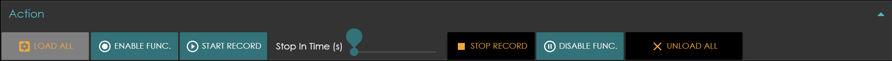
圖 99、自動測試頁面之操作區畫面
LOAD ALL(載入所有):
載入STH連線與資料處理程序(STHComm、DataProcess)，準備開始自動測試。
資料處理程序將會把感測原始資料的TXT檔案解析為CSV檔，提供資料分析。
ENABLE FUNC.(啟動功能):
啟動STH連線和資料處理程序，使系統進入工作狀態，準備接收和處理資料。
START RECORD(開始記錄):
開始記錄並處理來自STH的感測數據儲存為TXT檔，資料後續通過DataProcess進行處理並保存。
Stop In Time(s)(定時停止):
設定自動停止記錄的時間(以秒為單位)。
STOP RECORD(停止記錄):
停止記錄並暫停感測數據的處理。
DISABLE FUNC.(禁用功能):
暫停資料處理程序，停止STH連線和數據收集。
UNLOAD ALL(卸載所有):
結束所有STH連線與資料處理程序，使系統返回到未監控狀態。
- 線上智慧刀把(Online STH)
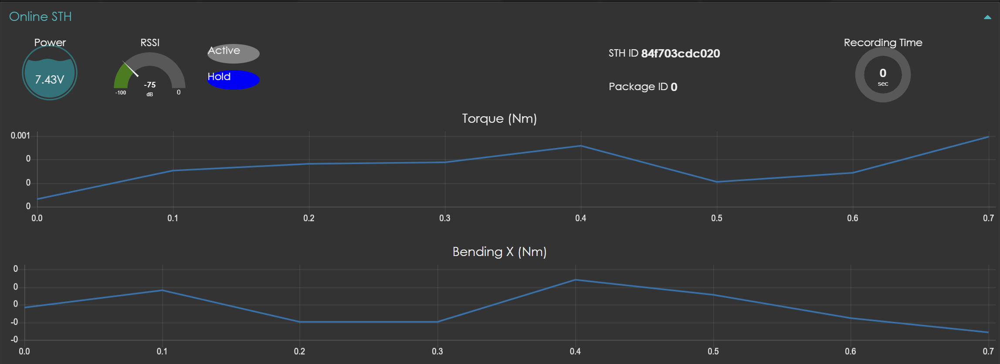
圖 100、自動測試頁面之線上智慧刀把畫面
Power(電量):
顯示目前啟用STH的電量。
RSSI(訊號強度):
顯示目前的無線訊號強度，幫助判斷連接的穩定性。
Active:
當此燈亮起時，表示目前訊號穩定，連線狀況良好。
Hold:
當此燈亮起時，表示目前訊號不穩定或與STH連線中斷，數據可能不完整。
STH ID:
顯示目前連接的STH的MAC地址。
Package ID:
每0.4秒接收到一個封包，封包ID會隨之累加，顯示當前的連接數據流量。
Recording Time(錄製時間):
按下「START RECORD」後，顯示已錄製的時間。
Torque(Nm) 和 Bending X(N):
分別以折線圖形式顯示STH讀取的扭矩和彎曲力數據。
- 日誌顯示(Logs)
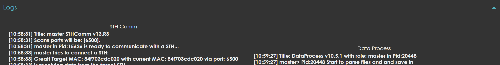
圖 101、自動測試頁面之日誌顯示
STH Comm 日誌:
當按下「LOAD ALL」後，顯示STHComm.exe的運行日誌，幫助了解連線過程中的詳細情況。
Data Process 日誌:
當按下「LOAD ALL」後，顯示DataProcess.exe的運行日誌，幫助追蹤數據處理的過程和狀態。
歷程檢視
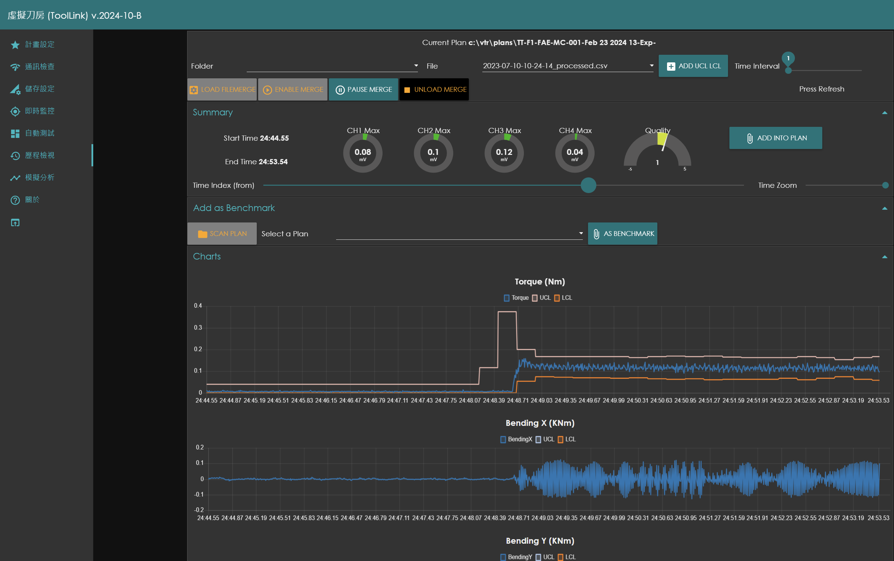
圖 102、歷程檢視頁面
歷程檢視頁面操作流程
- 計畫與資料夾設定
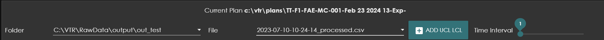
圖 103、歷程檢視頁面之計畫與資料夾設定畫面
Current Plan(當前計畫):
顯示目前計畫檔案的絕對路徑，讓用戶知道當前正在檢視的計畫檔案。
Folder(資料夾):
選取路徑C:/VTR/RawData/output下的可用資料夾，載入對應的測試數據。
File(檔案):
選取目前目錄下的可用資料檔案，這些檔案用於回顧分析和增加上、下管制界限。
ADD UCL LCL(為選取檔案增加上、下管制界限):
Folder和File選取完後按下「ADD UCL LCL」，即可為選取的CSV檔增加上、下管制界線（UCL/LCL），輸出檔名稱為原檔名+_processed。
Time Interval(時間間隔):
選取目前目錄下的可用資料檔案，這些檔案用於回顧分析和增加上、下管制界限。
- 合併檔案操作(File Merge)
圖 104、歷程檢視頁面之合併檔案操作畫面
LOAD FILEMERGE(載入合併):
載入檔案合併功能，讓用戶能將多個測試結果進行合併，以便於進一步分析。
ENABLE MERGE(啟動合併):
啟動合併程序，將選中的檔案數據進行合併處理。
PAUSE MERGE(暫停合併):
暫停合併過程，允許用戶在合併途中進行其他操作或檢查數據。
UNLOAD MERGE(卸載合併):
結束所有合併處理程序，將系統返回至未進行合併狀態。
- 數據摘要(Summary)
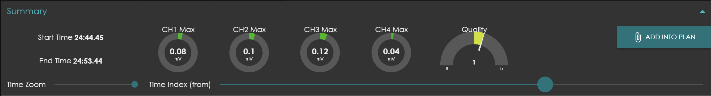
圖 105、歷程檢視頁面之數據摘要畫面
Start Time(開始時間)和End Time(結束時間):
顯示數據回顧的開始和結束時間，用於精確了解測試的時間範圍。
Time Index (from):
調整顯示資料回顧點的時間條。
Time Zoom(時間縮放):
調整數據回顧的時間範圍，便於更細緻地分析特定時間段內的數據變化。
CH1 Max、CH2 Max、CH3 Max、CH4 Max:
顯示各個通道(CH1、CH2、BendingX、BendingY)的最大電壓值(mV)，幫助判斷各通道在測試過程中的數據表現。
Quality(品質):
顯示數據的品質狀態:
1表示所有通道之間的差異在可接受範圍內，品質合格。
-1表示存在超出容差範圍的差異，品質不合格，需要進一步檢查。
- 基準設定(Add as Benchmark)
圖 106、歷程檢視頁面之基準設定畫面
SCAN PLAN(掃描計畫):
重新掃描路徑C:/VTR/Plans下的計畫檔案，以便選取作為基準的檔案。
Select a Plan(選擇計畫):
選取目前路徑下可用的計畫檔案，這些檔案將作為後續測試的基準。
AS BENCHMARK(設為基準):
將選定的計畫檔案設為基準，用於與其他測試數據進行對比。
- 圖表顯示(Charts)
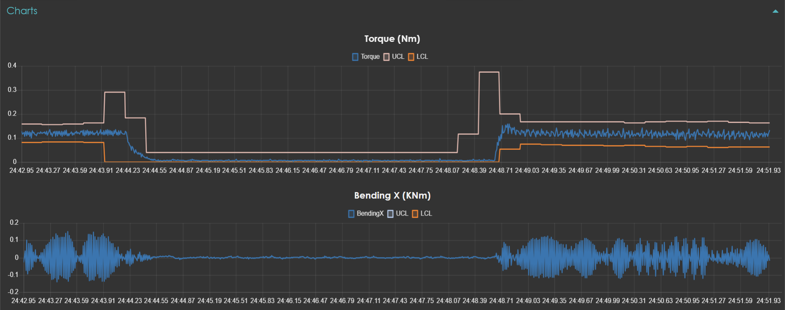
圖 107、歷程檢視頁面之圖表顯示畫面
Torque(Nm)、Bending X(KNm)、Bending Y(KNm)、CH1(mV)、CH2(mV):
顯示目前檔案中各通道的數據以折線圖形式呈現，這些圖表可以幫助用戶直觀地分析扭矩和彎曲力的變化情況。
UCL, Upper Control Limit(管制上限)
LCL, Lower Control Limit(管制下限)
模擬分析
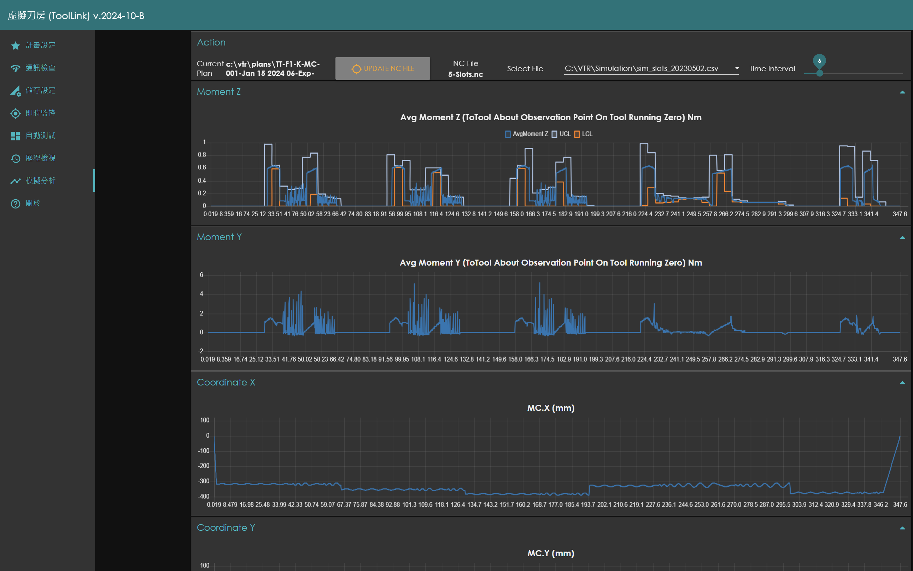
圖 108、模擬分析頁面
模擬分析頁面操作流程
- 操作區(Action)
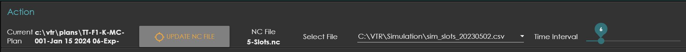
圖 109、模擬分析頁面之操作區畫面
Current Plan(當前計畫):
顯示目前的計畫檔案，讓用戶知道當前正在進行分析的計畫檔案。
UPDATE NC FILE(更新NC文件):
根據設定頁面的信息更新目標NC檔案名稱，便於管理和同步最新的NC程序。
NC File(NC文件):
顯示當前目標NC檔案的名稱。
Select File(選擇文件):
選擇目前已有模擬結果的CSV文件，這些文件包含模擬的數據並將用於分析。
Time Interval(時間間隔):
顯示數據檢視過程中每點的間隔n(0.003*n sec)，用來控制數據回顧的解析度。
- 模擬數據顯示(Simulation Data)
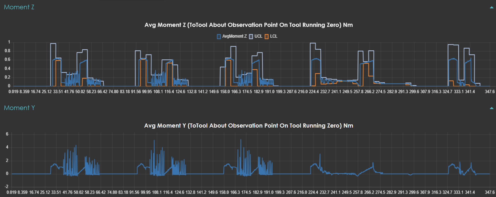
圖 110、模擬分析頁面之模擬數據顯示畫面
Moment Z、Moment Y:
顯示所選擇的模擬CSV文件中Z軸和Y軸的平均力矩數據(以折線圖形式顯示)。
UCL, Upper Control Limit(管制上限)。
LCL, Lower Control Limit(管制下限)。
圖表用於直觀地分析在不同時間點的Z軸和Y軸平均力矩變化情況，幫助理解工具在模擬運行過程中的受力情況。
Coordinate X、Coordinate Y、Coordinate Z:
顯示模擬數據中X軸、Y軸、Z軸的位置變化(以折線圖形式顯示)。
若要查看工具的模擬移動軌跡，可查看 Coordinate X、Coordinate Y、Coordinate Z 圖表，以了解工具在模擬過程中於不同方向上的位置變動。